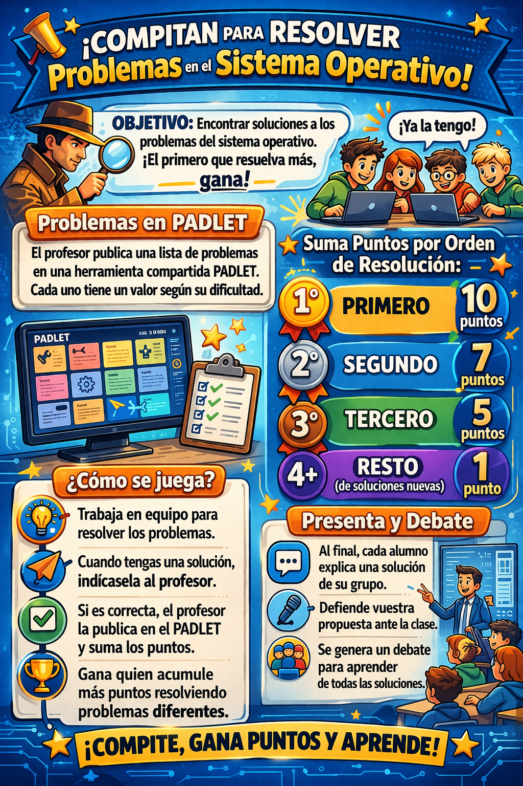

<br>
Tarea 1
El objetivo es encontrar solución a los problemas propuestos por el profesor, sobre el sistema operativo de un ordenador. Se pretende crear una competición, para intentar dar con las soluciones el primero, e intentar resolver el mayor número de problemas.
Se plantearán multitud de problemas, con distintos valores, dependiendo de la dificultad, en una herramienta compartida PADLET.
Cada vez que un grupo encuentre una solución, deberá indicarla al profesor para que pueda evaluarla, y la añadirá al PADLET, obteniendo y acumulando puntos.
Tu grupo obtendrá mas puntuación si es el primero, segundo o tercero en contratar soluciones diferentes, o un punto si la solución ya ha sido planteada.
Padlet permite que todos estén viendo, en tiempo real, que problemas se están resolviendo, cuales quedan pendientes, ver si las soluciones planteadas coinciden con la suya, competir y ver su trabajo con respecto a otros compañeros.
Permite además añadir emoticonos, imágenes, capturas, comentarios … lo que permitirá interactuar entre ellos (por ejemplo, ver quien está trabajando en cada proyecto)
Tarea 2
Una vez finalizado el reto, el profesor solicitará a cada alumno que explique una de las soluciones de su grupo, creando un debate, y defendiendo su propuesta.
